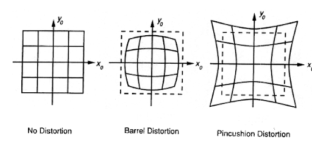

Camera Calibration의 필요성에 관하여
간단하면서 가장 기본적이고 필요한 내용 Camera Calibration

12월 첫 포스팅이자 마지막 포스팅이 될 듯하다. 최근에 .NET을 공부하느라 컴퓨터 비전에 굉장히 소홀이 했다. 뭐 솔직하게 말해서 .NET 공부 보다는 노느라 바뻐서 그랬다고 해도 무방하다.
Camera Calibration의 주 목적을 알게 되면 왜 필요한지 쉽게 이해가 된다. 가장 먼저 카메라로 인해 생기는 왜곡을 찾고 카메라에서 생기는 근본적인 오류, 왜곡이 되지 않은 사진에서의 각종 정보들을 읽어오냐가 중요하다. 일단 그 전에 카메라의 왜곡에 대해서 먼저 알고 넘어가야한다.
주로 카메라의 왜곡현상은 크게 2개로 나눌수 있는데 가장 radial distortion가 있다. 직역하면 방사형 왜곡인데 주로 Fish-eye Lens와 같은 사진에서 생기는 왜곡이다.
왼쪽 No distortion을 제외한 가운데와 오른쪽 왜곡 이미지가 가장 잘 묘사했다고 생각이 된다. radial distortion은 위 사진에서 나오는 왜곡현상을 모두 의미한다. 가장 흔히 접하는 카메라 렌즈의 왜곡 현상이다. 물론 고의적으로 영상에 담겨지는 느낌이나 화각을 넓히기 위한 주 목적도 있겠지만 아무튼 왜곡은 왜곡이다.